Minha Jornada

 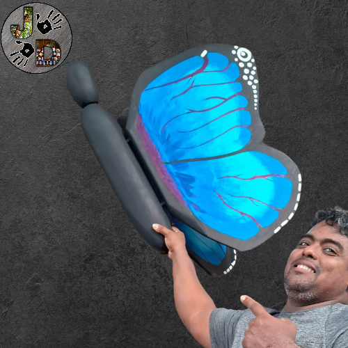
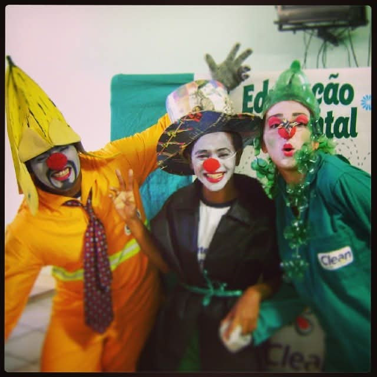
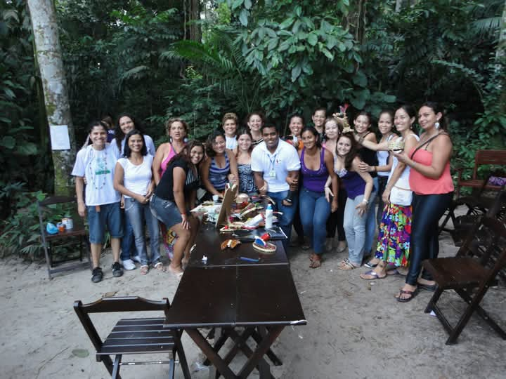
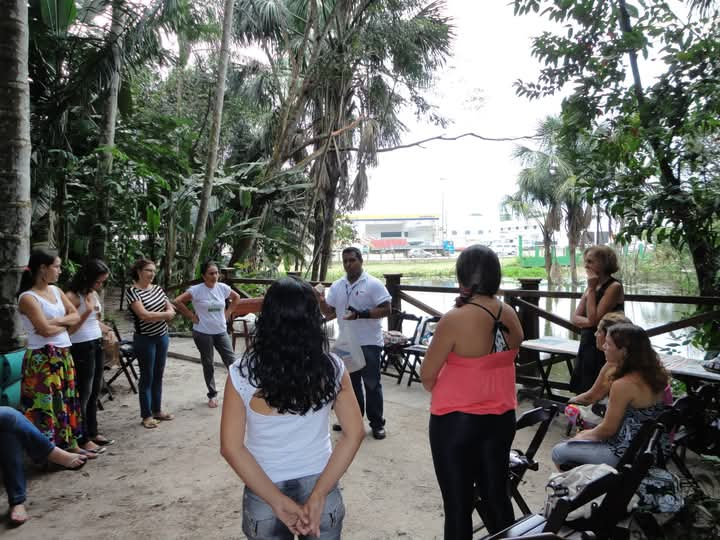
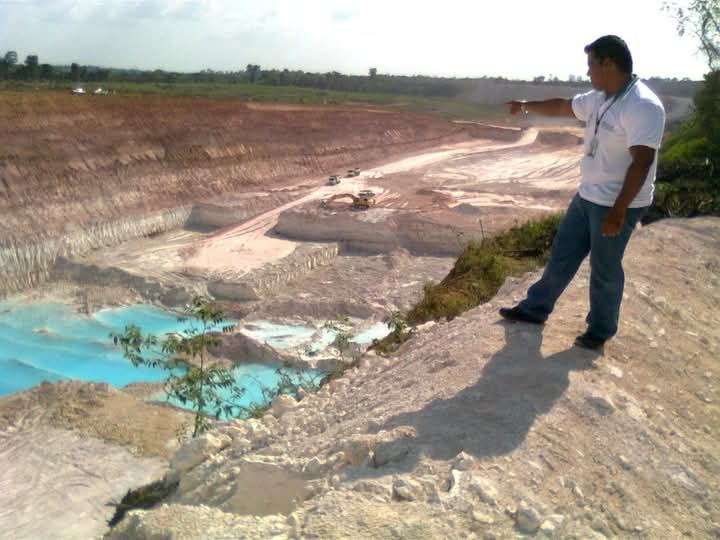
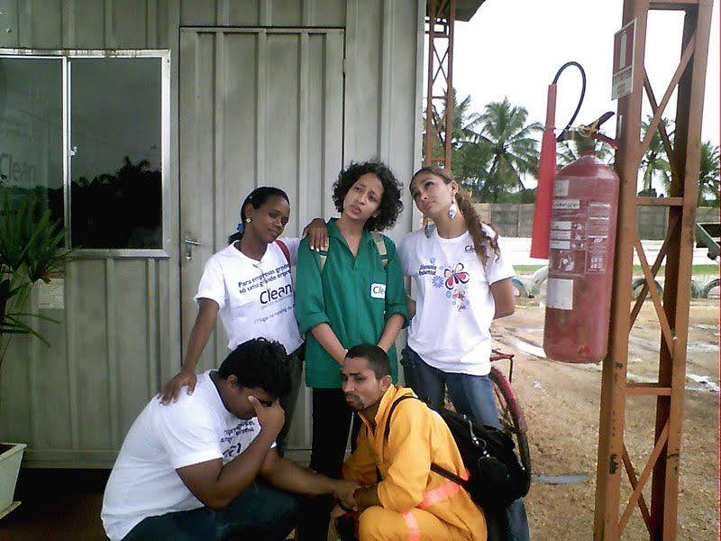
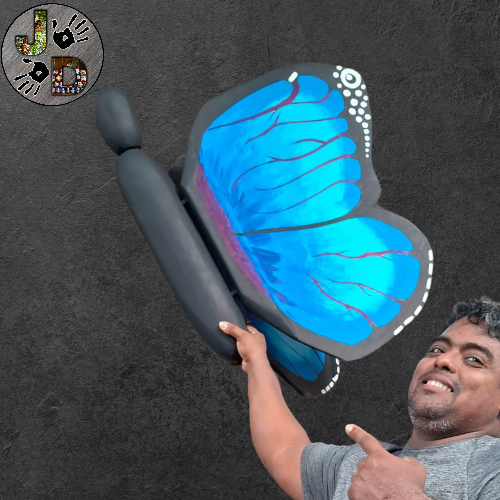
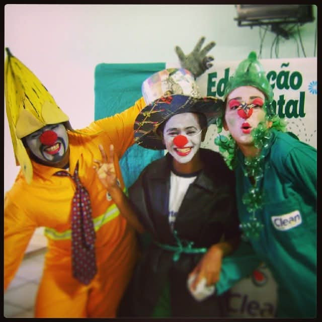
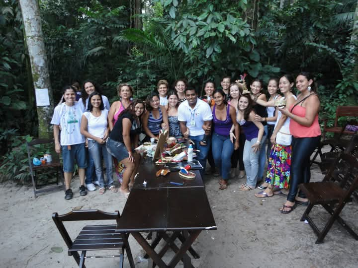
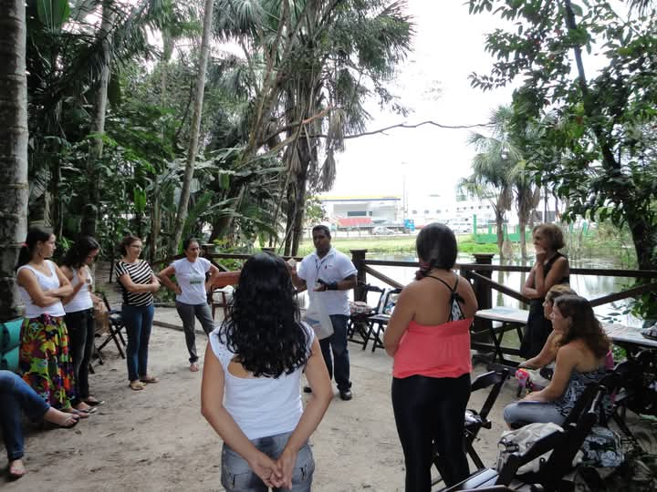
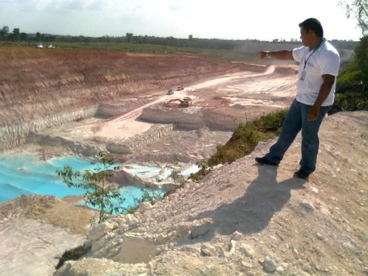
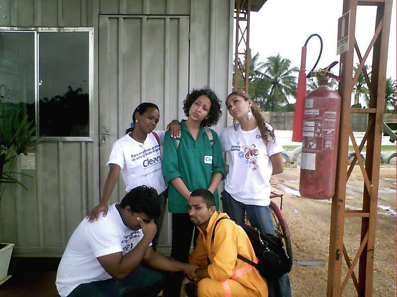
 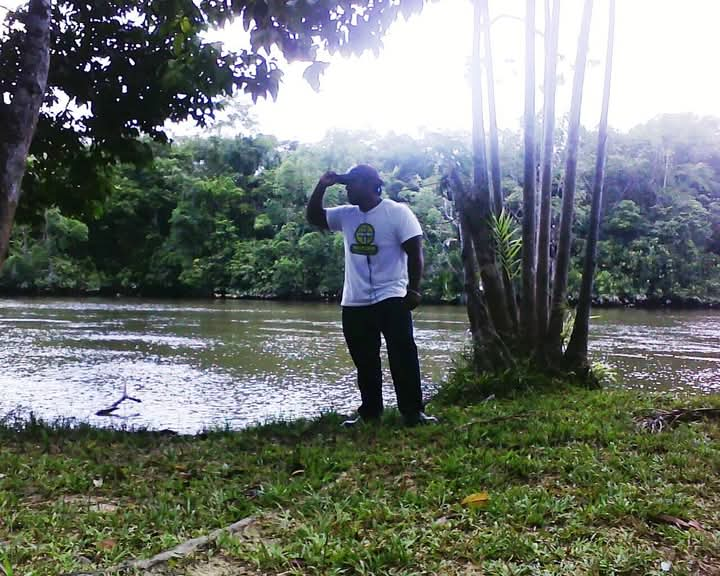
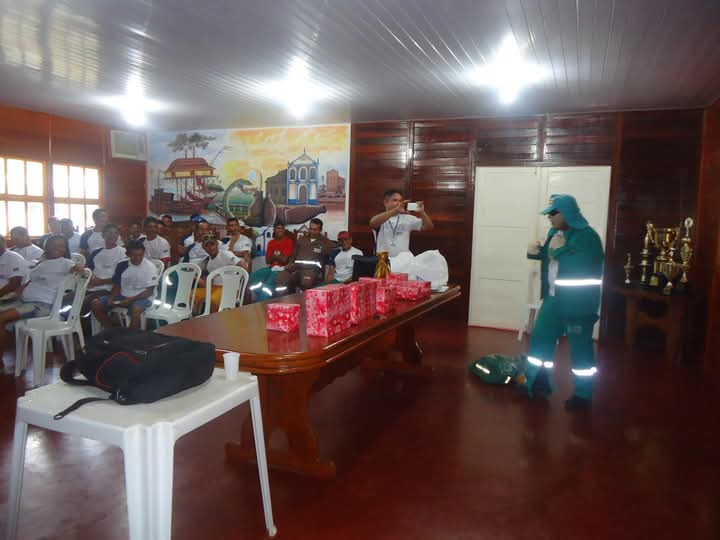
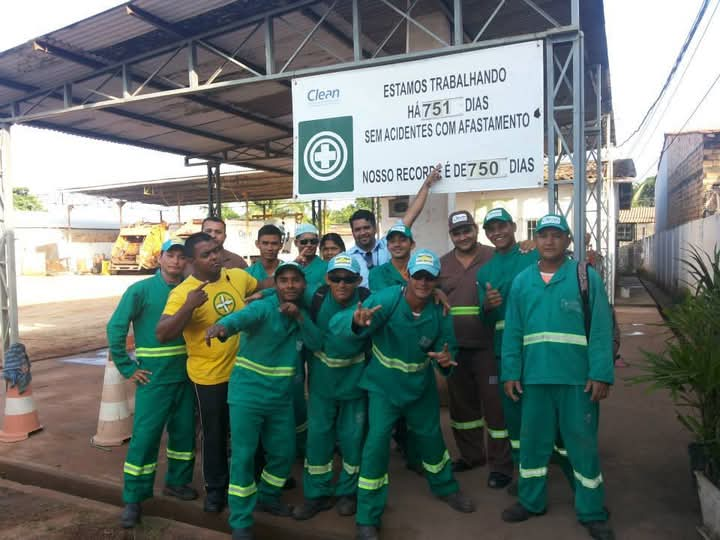
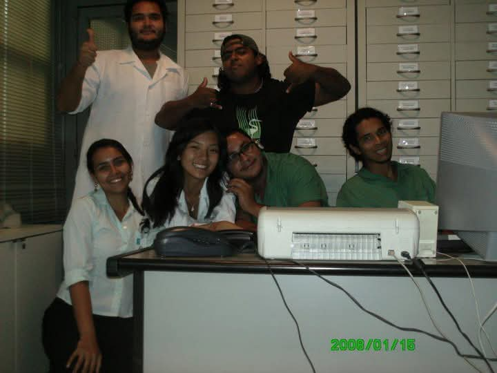
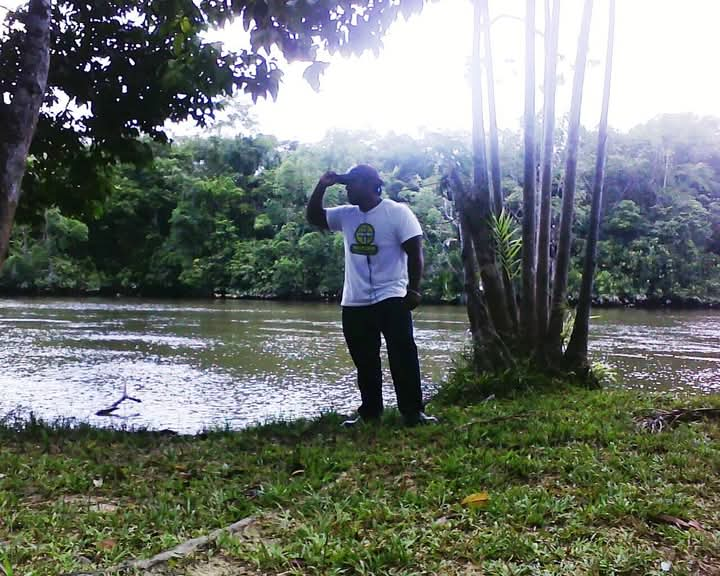
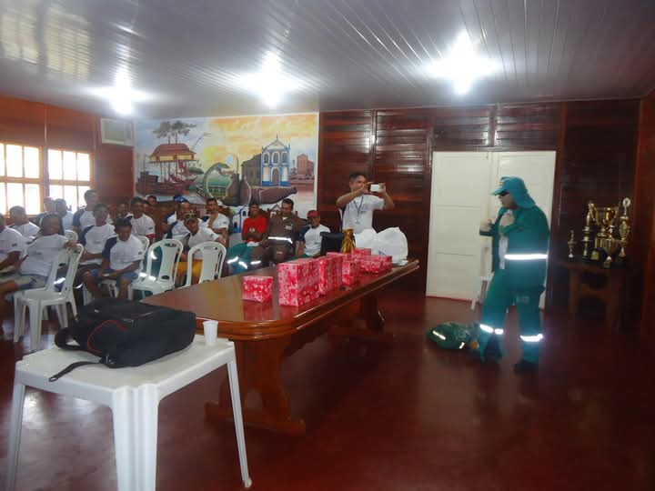
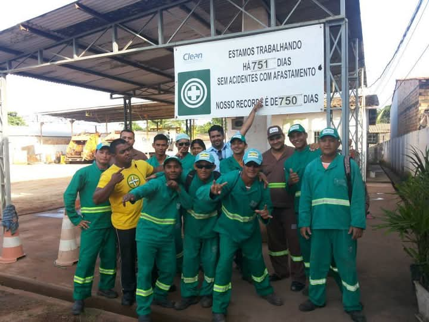
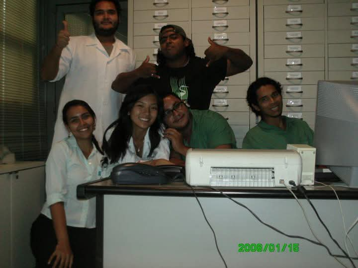

JD Arte em Miriti – “Minha Trajetória”
Origens e Raízes Familiares
Meu nome é Jonathan Diego. Sou artesão registrado no PAB (Programa do Artesanato Brasileiro) e formado em Análise e Desenvolvimento de Sistemas. Mas a minha história começa muito antes dos títulos e conquistas. Ela tem raízes profundas na cidade de Belém do Pará, onde nasci e cresci.
Sou neto de Dona Benedita de Jesus Brito, uma mulher guerreira, de coração imenso e mãos curadoras. Guardava consigo os saberes dos antigos — conhecimentos de fitoterapia e da cura pelos elementos da natureza — herdados de uma cultura viva entre caboclos, quilombolas e povos indígenas. Filho de Dona Maria do Socorro, mãe tradicional e afetuosa, e de Seu Reginaldo Cardoso, homem trabalhador e católico fervoroso, tenho também minhas irmãs Dheme Bethania que é uma vencedora e fonte de inspiração e a caçula Jhully do Rosário que considero como irmã e filha, ela tem um grande coração que cabe todo mundo "minha irmã cabeção", cresci em um lar repleto de música, fé e alegria. Era comum ouvir, entre risadas e encontros de família, as vozes de Zeca Pagodinho, Roberto Carlos, Paulo Diniz e Beth Carvalho.
Terra Firme: O Início da Jornada
Minha infância foi vivida no Bairro da Terra Firme, também conhecido como Montese — um dos territórios mais populares de Belém, marcado por contrastes, desafios e muita resistência. Apesar da ausência de políticas públicas, o bairro sempre pulsou com a força do seu povo: trabalhadores incansáveis dos comércios, das feiras e da vida cotidiana. A Terra Firme é, antes de tudo, um símbolo de luta, cultura e esperança — um lugar que me ensinou que é possível florescer mesmo em meio às adversidades.
Descobrindo a Natureza e a Cultura
Acredito que ser artesão é mais do que possuir um dom; é carregar nas mãos e no coração as experiências de uma vida inteira.
No ano de 2003 no Museu Emílio Goeldi, participei do Projeto Monitor Ambiental liderado pela Dra Vera Bastos de que quardo muita gratidão, o projeto reunia jovens de escolas públicas para atuar na conscientização ambiental, lá conheci o hoje, ambientalista, Biologo e futuro Doutor Juvenal Damasceno, um excelente amigo que contribuiu positivamente nessa trajetória.
No Goeldi encontrei o incentivo cultural que mudou meu rumo: o contato com a fauna, a flora e a magia dos movimentos culturais amazônicos.
Os Primeiros Trabalhos e Aprendizados
Em 2005, trabalhei na Neon Aquário, onde aprendi sobre montagem de aquários e criação de peixes ornamentais. No ano seguinte, fui convidado para integrar a equipe do Mangal das Garças como adestrador de animais. Foram anos de aprendizado intenso, lidando com espécies das famílias Felidae e Psittacidae, além de serpentes, anfíbios e insetos. Fui o maior criador da espécie de borboleta Caligo brasiliensis, soltando mais de cinquenta borboletas por dia no borboletário por uma semana — uma experiência inesquecível, fiz o cultivo desde as sementes até o crescimento da Vitória Regia que hoje está presente no parque.
União entre Arte e Meio Ambiente
Em 2009, atuei como auxiliar ambiental, unindo arte e consciência ecológica. Produzíamos peças artesanais com materiais reciclados e realizávamos apresentações teatrais em escolas e instituições privadas, levando mensagens sobre o cuidado com o meio ambiente e a transformação dos resíduos em arte.
Consolidação Profissional e Crescimento
Em 2013, recebi um novo convite profissional feito pela Professora Olinda coordenadora de meio ambiente, para trabalhar no município de Barcarena (PA) com a Secretaria de Meio Ambiente, promovendo a conscientização da população sobre os pontos críticos de lixo na cidade. Dois anos depois, fui promovido a auxiliar administrativo a convite de um grande coordenador e amigo Anderson Lobo, exerci nesta função até 2021, quando passei a integrar a empresa Recicle. Mais uma vez fui promovido, agora como assistente administrativo. Em 2022, solicitei transferência para o município de Abaetetuba, onde poderia ficar mais próximo da minha esposa, Mariane de Sarges Miranda — herdeira de uma tradicional família de artesãos de brinquedos de Miriti.
Família, Fé e Novos Caminhos
Em 2023, nasceu minha filha Aurora, um novo sol que iluminou minha vida. Durante esse período, retomei os estudos e concluí minha graduação, enquanto também mergulhava mais fundo na arte do Miriti. Desejei inovar essa nobre tradição e criei o Labirinto de Miriti — um brinquedo que estimula a percepção e o raciocínio, voltado tanto para crianças quanto para adultos com autismo. A aceitação foi extraordinária: todos os brinquedos foram vendidos no Miriti Fest.
Inovação e Pirografia no Miriti
Em 2025, aprofundei-me na arte da pirografia e comecei a aplicá-la sobre a fibra do Miriti, criando ímãs de geladeira, maracás, paus de chuva, quadros, barcos e canoas. Cada peça carrega o fogo da ancestralidade e a inovação da técnica — um encontro entre o antigo e o novo, entre o ferro, o fogo e a tradição amazônica. Essa fusão deu origem a uma nova vertente dentro da cultura dos brinquedos de Miriti.
JD Arte em Miriti: Um Sonho Concretizado
De toda essa trajetória nasceu a JD Arte em Miriti — empresa que representa não apenas o meu trabalho, mas também a força cultural de uma região inteira. Participamos da Feira de Brinquedos de Miriti de Abaetetuba em Belém, e da FAC – Feira de Artesanato e Cultura promovida pelo SEBRAE no Porto Futuro. Agora, nos preparamos para a COP 30, levando conosco a arte, a fé e o orgulho de ser parte viva desse patrimônio cultural amazônico.